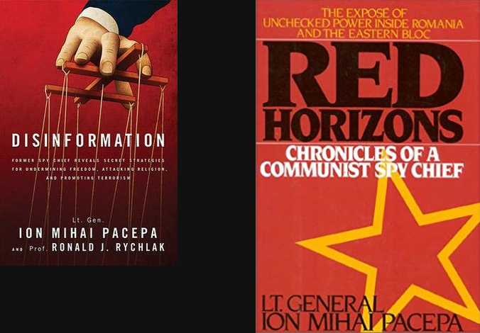

Dan Demeter, Kaspersky Lab Romania
@_xdanx --
def.camp, 2018
Remember, remember!
The fifth of November,
The Gunpowder treason and plot;
I know of no reason
Why the Gunpowder treason
Should ever be forgot!
"Who owns the information, he owns the world."
-- Guy Fawkes (1570-1606)
Ion Mihai Pacepa

Our friends in Moscow call it "dezinformatsiya". Our enemies in America call it "active measures", and I, dear friends, call it "my favorite pastime."
IF YOU ARE GOOD AT DISINFORMATION, YOU CAN GET AWAY WITH ANYTHING.” (p. 80)
For years, the history books listed Napoleon's official height as 5 feet, 2 inches (1.58 meters), indisputably in "shorty" territory. But that's because they mistakenly believed that a French "foot" was the same as an English foot.
He was actually 1.7m
The source of the "Einstein flunked math" myth is not clear. However, when shown the allegation in a 1935 "Ripley's Believe It or Not" column, Einstein replied, "I never failed in mathematics. Before I was 15 I had mastered differential and integral calculus"
Active measures is a Soviet term for the actions of political warfare conducted by the Soviet and Russian security services to influence the course of world events, in addition to collecting intelligence and producing "politically correct" assessment of it. Active measures range "from media manipulations to special actions involving various degrees of violence". They were used both abroad and domestically.
Source: Wikipedia
Active measures is a Soviet term for the actions of political warfare conducted by the Soviet and Russian security services to influence the course of world events, in addition to collecting intelligence and producing "politically correct" assessment of it. Active measures range "from media manipulations to special actions involving various degrees of violence". They were used both abroad and domestically.
Source: Wikipedia
Active measures’ can include a combination of White, Grey and Black propaganda.
Source: LSE Soviet Subversion, Disinformation and Propaganda: How the West Fought Against it (2017) (p. 17)
Source: LSE Soviet Subversion, Disinformation and Propaganda: How the West Fought Against it (2017) (p. 20)
Source: LSE Soviet Subversion, Disinformation and Propaganda: How the West Fought Against it (p. 23)
Soviet Bloc Intelligence and Its AIDS Disinformation Campaign -- Thomas Boghardt
Source: Airborne Leaflet Propaganda
https://www.cia.gov/library/readingroom/document/cia-rdp80b01676r002600100042-9
https://www.cia.gov/library/readingroom/document/cia-rdp80b01676r002600100042-9
https://www.cia.gov/library/readingroom/document/cia-rdp80b01676r002600100042-9
https://www.amazon.com/Radio-Free-Europe-Liberty-International/dp/0804773564
"More than ever, European citizens see their country’s membership to the EU as a good thing"
On European average, the abuse of personal data online as well as fake news and disinformation online return as lowest-ranked threats. On national level, the abuse of personal data online scores the highest in Denmark with 26% and 23% in both the Netherlands and Ireland for. In Latvia (25%), Sweden and Romania (both 24%) the threat of fake news and disinformation online find its highest relative support
https://ksj.mit.edu
"[...]conducted more than 300 surveys and more than 90 interviews [...] to gather various perspectives on fact-checking policies and procedures"
https://ksj.mit.edu
"The study focused not on the watchdog efforts of political fact-checkers [...], but rather on the in-house quality control that publications do before a story goes to print - a practice known as editorial fact checking"
Borel says she was also struck to learn that “the hourly rate for fact-checkers is all over the place.” Some fact checkers reported earning $19 an hour; others four times that much. Some outlets paid as little as $15 an hour. On average, fact-checkers who participated in the study earned about $30.
Report a Facebook Page
Stefan Tanase - Today @12:30
the state of being apart from other people or concealed from their view; solitude; seclusion
OR
freedom from damaging publicity, public scrutiny, secret surveillance, or unauthorized disclosure of one’s personal data or information, as by a government, corporation, or individual
The state of being free from unwanted or undue intrusion or disturbance in one's private life or affairs; freedom to be left alone
Things we can do
"Who owns the information, he owns the world."
-- Nathan Rothschild (1777-1836)
@_xdanx
Global Research and Analysis Team
Kaspersky Lab